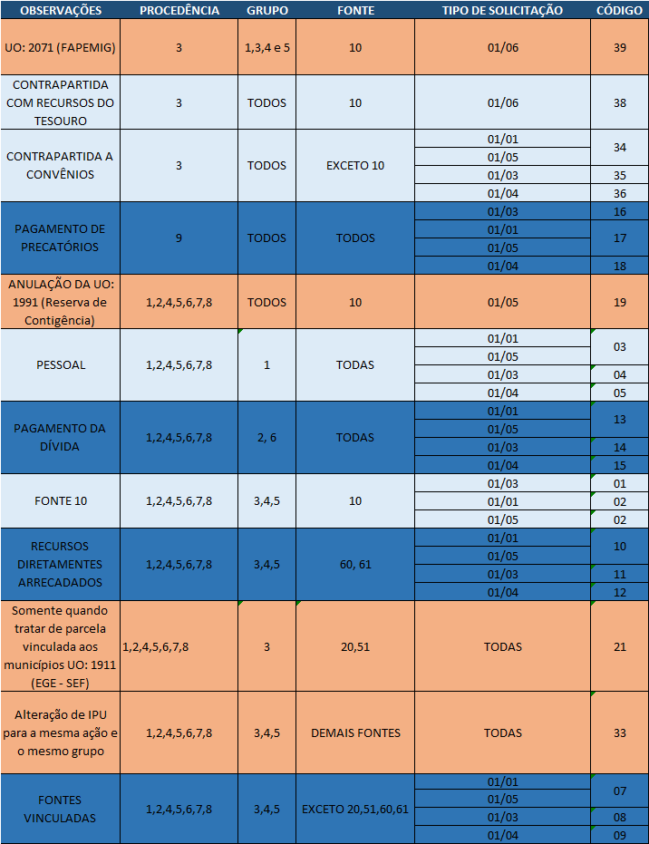

Capítulo 2 Elaboração de Solicitação de Alteração Orçamentária
Quando da necessidade de uma alteração orçamentária, o técnico setorialista registra no SIAFI-MG uma permissão para que o oórgão solicitante possa inserir as informações nos sistema. Conforme procedimento abaixo:
2.1 Solicitação de Alteração Orçamentária (UO)
- Acesse o SIAFI utilizando o login e senha
- Depois selecione a opção (10): Tabela
- Selecione a opção (05): Orçamentaria
- Selecione a opção (25): Autorização Solicitação de Alteração Orçamentaria; Ação (01): Registrar.
- Informe os dados solicitados e tecle Enter
- Após efetuado os passos anteriores tecle F5 para confirmar a inclusão
2.2 Solicitação de Alteração Orçamentária (Técnico)
Algumas vezes pode ocorrer de o técnico registrar a solicitação no SIAFI-MG, sem a necessidade de interação com o órgão. O registro é feito da seguinte forma
- Acesse o sistema com seu login e senha
- Selecione a opção (03): Movimentação Orçamentaria
- Selecione a opção (01): Alteração Orçamentária
- Selecione a opção (01): Solicitação de Alteração de Crédito Orçamentário; Ação (01): Registrar.
- Marque um X na opção desejada
- Marque um X na opção Crédito Normal
- Preencha com a informação da Unidade Orçamentária
- Na tela seguinte, preencha as informações complementares solicitadas e sigas as orientações para a finalização do registro.
ATENÇÃO:aos comandos na parte inferior da tela, Teclas F1 a F12
2.3 Preparação dos documentos para o Núcleo de Gestão Orçamentária (NGO)
2.3.1 Exemplo de Solicitação Autorizada
A imagem abaixo é um exemplo de Solicitação Autorizada.
2.3.2 Passos para a Elaboração do Documento
Alguns tópicos necessitam de maior atenção para a escrita do documento de Solicitação Autorizada. São eles
2.3.2.1 Origem de Crédito (OC)
Para o registro da OC devemos atentar a seguinte ordem de critérios:
- Observações
- Procedência
- Grupo
- Fonte
- Tipo de Solicitação
- Registrar o código
Tais critérios devem ser observadors no quador a seguir 
EXEMPLO
Suponha a seguinte classificação orçamentária
2101 18 541 143 4380 0001 339035 0 61 1 01 / 04 213.377,00 +Pelos critérios estabelecidos na checklist, temos:
| Critério | Correspondente |
|---|---|
| Observação | Recursos Diretamente Arrecadados |
| Procedência | 1 |
| Grupo | 3 |
| Fonte | 61 |
| Tipo de Solicitação | 01/04 |
| Registro de Código | 12 |
Logo, podemos concluir que o código é o 12
2.3.2.2 Textos da Solicitação Autorizada
Os textos que compõem o Decreto de Alteração Orçamentária são padronizados. Quando o setorialista encaminha o texto na forma correta o tempo de prepação do Decreto é diminuído consideravelmente.
Segue abaixo os exemplos mais comuns:
OBSERVAÇÃO: As solicitações que contemplam apenas REMANEJAMENTO não precisam ser encaminhadas como texto.
EXCESSO DE ARRECADAÇÃO DE CONVÊNIO I - do convênio n.º 834290/2015, firmado em 08 de novembro de 2016, entre a Secretaria de Estado de Planejamento e Gestão e o Ministério do Planejamento de Desenvolvimento Social, no valor de R$496.622,92 (quatrocentos e noventa e seis mil seiscentos e vinte e dois reais e noventa e dois centavos);
EXCESSO DE ARRECADAÇÃO DE CONTRAPARTIDA DE CONVÊNIO I - da contrapartida ao convênio n.º 834290/2015, firmado em 08 de novembro de 2016, entre a Secretaria de Estado de Planejamento e Gestão e o Ministério do Planejamento de Desenvolvimento Social, no valor de R$496.622,92 (quatrocentos e noventa e seis mil seiscentos e vinte e dois reais e noventa e dois centavos);
SALDO FINANCEIRO DE CONVÊNIO I - dO saldo financeiro do convênio n.º 834290/2015, firmado em 08 de novembro de 2016, entre a Secretaria de Estado de Planejamento e Gestão e o Ministério do Planejamento de Desenvolvimento Social, no valor de R$496.622,92 (quatrocentos e noventa e seis mil seiscentos e vinte e dois reais e noventa e dois centavos);
SALDO FINANCEIRO DE CONTRAPARTIDA DE CONVÊNIO I - dO saldo financeiro de contrapartida do convênio n.º 834290/2015, firmado em 08 de novembro de 2016, entre a Secretaria de Estado de Planejamento e Gestão e o Ministério do Planejamento de Desenvolvimento Social, no valor de R$496.622,92 (quatrocentos e noventa e seis mil seiscentos e vinte e dois reais e noventa e dois centavos);
EXCESSO DE ARRECADAÇÃO DE RECURSOS DIRETAMENTE ARRECADADOS I - do excesso de arrecadação da receita de Recursos Diretamente Arrecadados da Loteria Mineira de Estado de Minas Gerais, no valor de R$10.000.000,00 (dez milhões de reais);
SALDO FINANCEIRO DE RECURSOS DIRETAMENTE ARRECADADOS I - do saldo financeiro da receita de Recursos Diretamente Arrecadados da Loteria Mineira de Estado de Minas Gerais, no valor de R$10.000.000,00 (dez milhões de reais);
ATENÇÃO
Não devemos utilizar siglas no texto do Decreto
O nome da receita deve ter as iniciais maiúsculas
A primeira letra do parágrafo é sempre minúscula
O mês é sempre escrito em letra minúscula
Não existe espaço entre o R$ e o valor
o valor por extenso não é separado por vírgula e a conjunção (e) somente é usada quando necessário.
DICA: O site https://4devs.com.br/numero_por_extenso escreve o número por extenso, mas atenção para o “e” entre os milhões, milhares e centenas.